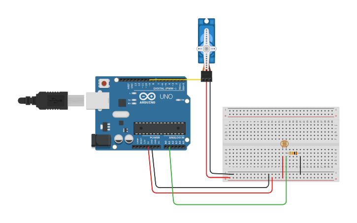

Week Eight
Wot is Physical Computing?
Physical computing refers to the use of tangible, embedded microcontroller-based interactive systems that can sense the world around them and/or control outputs such as lights, displays and motors.
This week began with an introductory slideshow lecture, notes found at the bottom of the page.
For the first exercise, we were asked to replicate the "fish playground". Unfortunately, I had completely forgotten to take a picture of the finished product.
This is particularly disappointing, as we had genuinely gotten the setup working! Seen below is the original TinkerCAD reference.

Speculative Objects
The activities for building a physical paper protoype were sadly cut out of this shorter lesson. However, we did get around to attempting the second Arduino example, working with LED lights in a matrix.
The only issue was that due to the excessive amount of regular and grounding wires, the breadboard quickly became very messy and fiddly to work with.
Due to this, we were unable to get the LED lights to work.
Other General Note-Taking
Research Journal:
- link to image, caption, body text, tags, url, title
- you have control over the css
- out character for Helvetica to avoid curly Rs
- "comma separated values spreadsheet" for exporting excel, photos are links in spreadsheet, local
- excel, "freeze" the top line to keep it as category labels
- data, sort, then import it to html
- ctrl P to create PDF for submission
- make sure to include appendix, the template uses content management system: papa parse - CSV - breaks into columns and rows, reads javascript
- make sure to reference weeks 1-10 in waypost theme
Project 2C
doesnt necessarily have to have electronics/ physical output
basically just create interactivity somehow
please show a prototype tho.
what, why & how - (PITCH next week)
put in precedents for your project (a.k.a. inspirations)
Week 10 is in SOUTHBANK, MAKE PITCH!!
Submissions will still be individual even if we work in pairs, show your take on what you contributed
Arduino
- Breaking down components
- Physical computing: involves interactive systems that can sense and respond to the world around them.
- Components: transfer and presentation and expenditure of energy, e.g. sound or light into "current" - sensor networks iot & arduino
- EasyMFRC522 Library - Labelled data on the class Arduino IDE
- The board, ground = where the + charge turns to -
- Neutralising the charge
- Make sure you're using Arduino UNO
Personal Notes & Takeaways:
- How did I feel about this? Well, I think that it's really interesting and very fun, but I can already predict that I will begin to struggle when more wires are added.
- This week's project was worked on with Mario.
- This week's regular class had landed on public holiday (ANZAC DAY), so a make-up class had been scheduled for Tuesday and Wednesday afternoon.
I attended the Wednesday afternoon session, but was late due to Typography class in the morning. Missed out on the first half hour explaining the Research Journal.